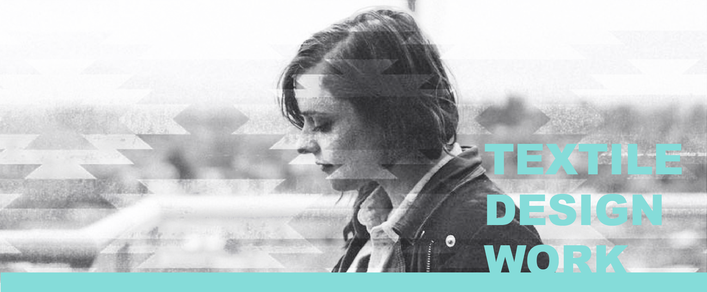

PUBLICITY
For nearly a decade Veronica Ward focused her creative energy in the fashion industry as a textile designer. She has worked for big name brands such as Eddie Bauer and Hollister Co. Her exceptional design work has not gone unnoticed, her clothing has been featured on television shows like 30 Rock (plaid) and Bates Motel (sweater).
Geometrics
All geometric artwork depicted below was hand drawn by Veronica and manipulated using Photoshop.
Florals and Tropicals
The artwork featured below was created from hand paintings (by Veronica) and adjusted using a combination of Photoshop and Kaledo Print.
Camos
Though Veronica spent her time focusing on artwork for women's clothing, she enjoys being part of a team and helping out in any way that she can. During her time at Eddie Bauer Veronica assisted in creating artwork for the men's team, depicted below are some men's camouflage prints.
Conversationals
Conversationals are a personal favorite for Veronica, she loves prints with a little bit of personality. The prints displayed below were hand painted/drawn by Veronica for personal use.
Sweaters
Sweater artwork requires extensive knowledge in yarns and gauges to execute properly, Veronica had to research knitting and innovative sweater techniques. All sweater artwork was created using Ned Graphics.
Plaids
Plaid artwork is another personal favorite of Veronica's. She enjoys creating plaids because inputting the formulas within the design software helped her learn how to code (a new hobby she picked up). The plaids below were created using Pointcarre.